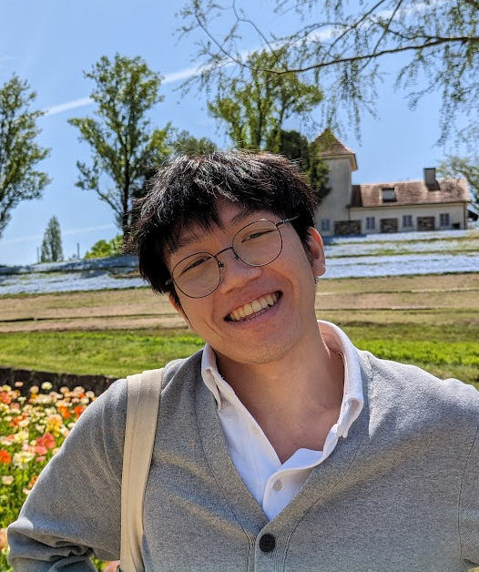

Kevin Lo

Summary
I'm an adaptable and quick learner with experiences in quality assurance and education.
Education
- Bachelor of Engineering - Building Engineering (2019)
Concordia University, Montreal, Quebec
- Diploma of College Studies - Pure and Applied Sciences (2013)
Vanier College, Montreal, Quebec
- Secondary School Diploma (2011)
Vincent Massey Collegiate, Montreal, Quebec
Français Langue D’Enseignement (FLE)
Work Experience
- Assitant Language Teacher (Sep 2021 - Current)
Okayama Board of Education, Kurashiki, Japan
- Led the classrooms as the primary teacher and incorporated team-teaching lessons with several Japanese teachers.
- Created unique lesson plans that catered to the needs of each school’s students.
- Accommodated colleagues by juggling a schedule of four main high schools.
- Personally requested to partake in other schools’ exchanges and seminars.
- Warranty Administrator (Aug 2020 - Apr 2021)
TransformerTable, Pointe-Claire, Quebec
- Independently overhauled the previous warranty workflow and trained assistants.
- Immediately resolved 2 year’s worth of problems within 3 months.
- Closely and continuously stayed in contact with clients to avoid further complaints or doubt.
- Quality Assurance Tester (Aug 2018 - Apr 2020)
Keywords Studios, Montreal, Quebec
- Performed benchmark tests on phones, consoles and computers, that are manually assembled.
- Supervised newer employees by creating workflows, test cases and end-of-day reports.
- Selectively chosen to work on-site with larger clients such as Ubisoft, Square-Enix and Epic Games.
- Food Service Worker (July 2016 - Dec 2017)
Ben and Jerry’s, Montreal, Quebec
- Always served orders with a smile and with the best customer service.
- Balanced a part-time job while studying for my Bachelors.
- Independently worked as a one-man-show during offseasons.
Technical Skills
Applications
- Windows OS
- Microsoft Word /Excel /Powerpoint
- AutoCAD, Autodesk Revit
- JIRA Project Tracking Software / Testrail Management Software
- AnvilNext Game Engine
Programming
- Matlab
- HTML5 & CSS
- Javascript
- C & C++
Key Skills
- Customer Service
- Quality Testing
- Creative Thinking
- Mentoring
- Adaptability
- Problem Solving
- Open Mindness